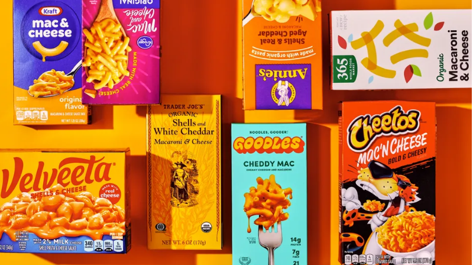

macaroni & cheese

servings: 1 | ingredients: 3? 4? | prep time: 15 min
description:
Macaroni & cheese is a relatively simple meal to execute versus, for instance, a properly prepared peanut butter and jelly sandwich. If you want to make a fancy cheese and noodle dish to impress fellow adults, level up to fettucine alfredo. Meanwhile, this no-fail recipe takes you step by step through making perfect mac & cheese every time.
ingredients:
- a box of macaroni & cheese
milk half & halfmargarine butter
steps:
- When you are at the grocery store, remember that sometimes you feel nostalgic for boxed macaroni & cheese.
- Create a positive narrative in your head about feeding your inner child.
- Go to the pasta aisle and find the kind of macaroni & cheese you ate as a kid.
- Estimate how many times this week you will feel too tired to cook.
- Buy twice that many boxes, because it's better to be safe.
- Go home and decide to make macaroni & cheese because shopping is a lot of work and you're hungry.
- Follow the instructions on the box.
- Eat all of it. Those serving sizes on the box are obviously for children.
I add sauteed broccoli and mushrooms for adult credit and because the historically authentic chopped up hot dogs sound kind of gross now. Also, Kraft Original is the purest nostalgia choice but the Trader Joe's Shells and White Cheddar is a nice sophisticated twist.